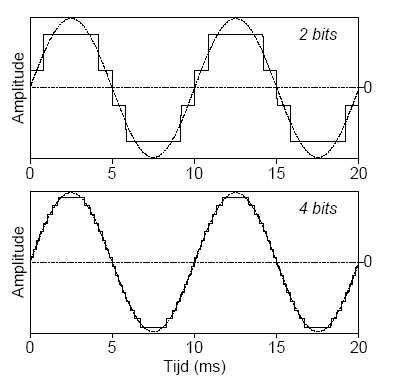

Niet alleen het visuele aspect is belangrijk bij de techniek van tegenwoordig. Geluid speelt namelijk ook een grote rol. Maar hoe wordt dat eigenlijk digitaal opgeslagen, geluid bestaat namelijk niet uit woorden of cijfers. Toch is dat niet helemaal waar. Geluid kun je namelijk opslaan in de vorm van getallen. Stel dat je elke toonhoogte een nummer geeft, 0 is heel laag en 1000 is heel hoog. 20 keer per seconde laat je de toonhoogte van dat moment vaststellen. Zo heb je een makkelijke methode van geluid digitaal opslaan. Als je de audiokwaliteit hoger wilt moet je meer toon metingen per seconde hebben, hoe meer hoe hoger de kwaliteit. Zo kan je de resolutie van audio bepalen.
 Wil je nog meer weten over hoe geluidsopslag werkt op een computer, klik dan op deze link!